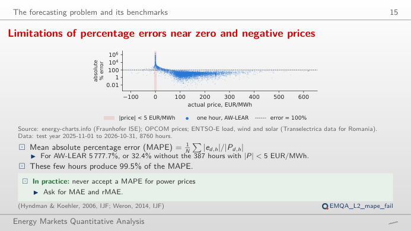
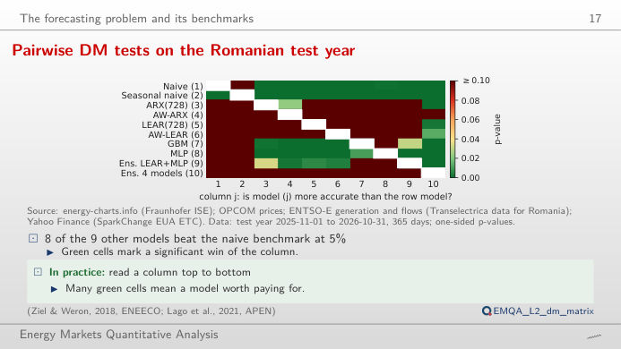
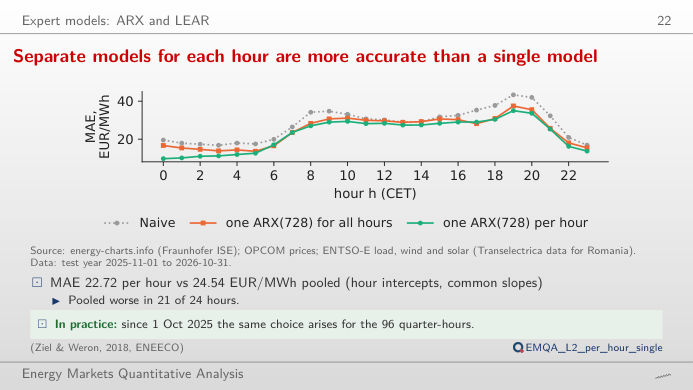
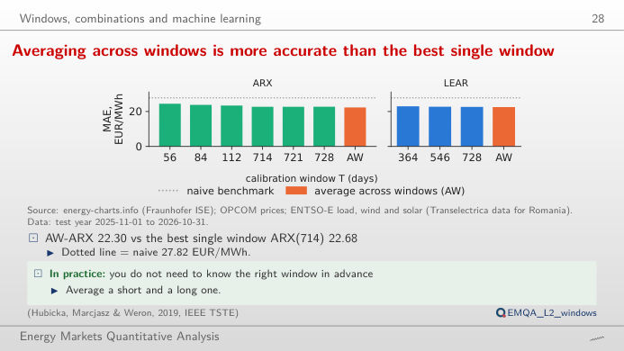
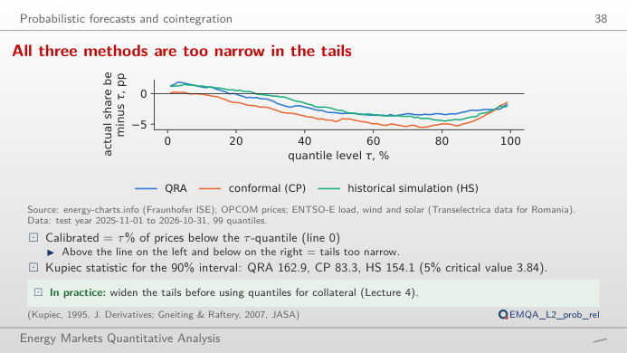
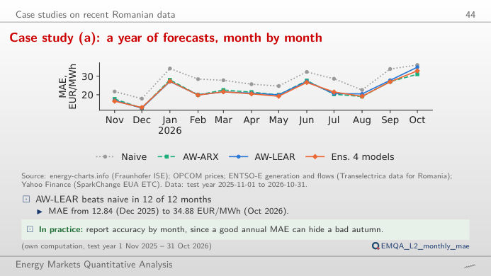

The slide of the lecture is on the left, the same figure on the right, recomputed in your browser from the forecasts of the lecture when you move a control. The ▶ button moves the main parameter step by step. Test year: 1 November 2025 – 31 October 2026 (365 days × 24 hours, Romanian day-ahead market, OPCOM PZU). Under each figure: a readout, a question for the room and the Quantlet with the code of the chart.
The forecasting problem and its benchmarks · Expert models: ARX and LEAR · Windows, combinations and machine learning · Probabilistic forecasts and cointegration · Case studies on recent Romanian data
The forecasting problem and its benchmarks
Limitations of percentage errors near zero and negative prices

Answer
No. The percentage error divides by the actual price, and 387 hours have |price| below 5 EUR/MWh (60 are exactly zero, 195 are negative). These hours produce 99.5% of the MAPE; excluding them, the MAPE of AW-LEAR falls to 32.4%. Move the slider: the MAE and the sMAPE hardly change, the MAPE collapses. With prices near zero, MAE, RMSE and the relative MAE (rMAE, MAE divided by the MAE of the naive forecast) are the measures to report.
Pairwise DM tests on the Romanian test year

Answer
The first yes, the second no. The DM test works on the daily loss differential d_t (mean over the 24 hours of |e_A| − |e_B|) with a Newey–West variance (7 lags): naive vs AW-LEAR gives DM = 7.32, one-sided p < 0.001; AW-ARX vs AW-LEAR gives DM = −0.83, p = 0.80, so AW-LEAR is not more accurate than AW-ARX. Change the loss to squared errors or the number of lags: the sign of the conclusion for naive vs AW-LEAR does not change; for close models it can.
Expert models: ARX and LEAR
Separate models for each hour are more accurate than a single model

Answer
In 21 of the 24 hours. Its MAE over the year is 24.54 EUR/MWh, against 22.72 for ARX(728) with one regression per hour: each hour has its own dynamics (night hours follow the previous day closely, the solar hours depend more on renewables). The errors of all models peak in the evening: AW-LEAR has its worst hour at 19:00 (34.52 EUR/MWh) and its best at 01:00 (9.47).
Windows, combinations and machine learning
Averaging across windows is more accurate than the best single window

Answer
Yes. AW-ARX, the average across the windows 56, 84, 112, 714, 721 and 728 days, has an MAE of 22.30 EUR/MWh, below every single window (best: 714 days, 22.68). Short windows adapt quickly to new price levels, long ones estimate the coefficients precisely; their errors are not perfectly correlated, so averaging reduces the error. Untick windows to see which combinations still help. For LEAR, the average of 364, 546 and 728 days (22.53) also beats each window (best: 728 days, 22.62).
Probabilistic forecasts and cointegration
All three methods are too narrow in the tails

Answer
In 85.67% of the hours, below 90%: the interval is too narrow, and the Kupiec test (a likelihood-ratio test of the share of hours outside the interval) rejects correct coverage (p < 0.001). The 50% interval covers 47.3%. The reliability chart shows, for each quantile level τ, the share of prices below the quantile minus τ, in percentage points (pp): above zero in the lower tail and below zero in the upper tail, so extreme prices are more frequent than the model expects. Choose an hour: the evening hours have the widest intervals.
Case studies on recent Romanian data
Case study (a): a year of forecasts, month by month

Answer
AW-LEAR beats the naive forecast in all 12 months; the ensemble (mean of AW-ARX, AW-LEAR, GBM and MLP) beats AW-LEAR in 8 of the 12 months. The error level moves a lot between months: AW-LEAR has 12.84 EUR/MWh in December 2025 and 34.88 in October 2026. Switch to the relative MAE: the ranking of the models is more stable than the level of their errors.
Prices: OPCOM PZU (Romanian day-ahead market) via energy-charts.info (Fraunhofer ISE); delivery day in Central European Time (CET/CEST), 24 hourly values per day (the 15-minute prices from 1 October 2025 are averaged to the hour). Forecasts: the models of Lecture 2, re-estimated every day of the test year with data available at gate closure (Quantlets EMQA_L2_*). Abbreviations: MAE mean absolute error, RMSE root mean squared error, MAPE mean absolute percentage error, sMAPE symmetric MAPE, ARX autoregressive model with exogenous inputs, LEAR lasso-estimated autoregressive model, AW average across calibration windows, GBM gradient boosting machine, MLP multilayer perceptron, DM Diebold–Mariano, QRA quantile regression averaging.